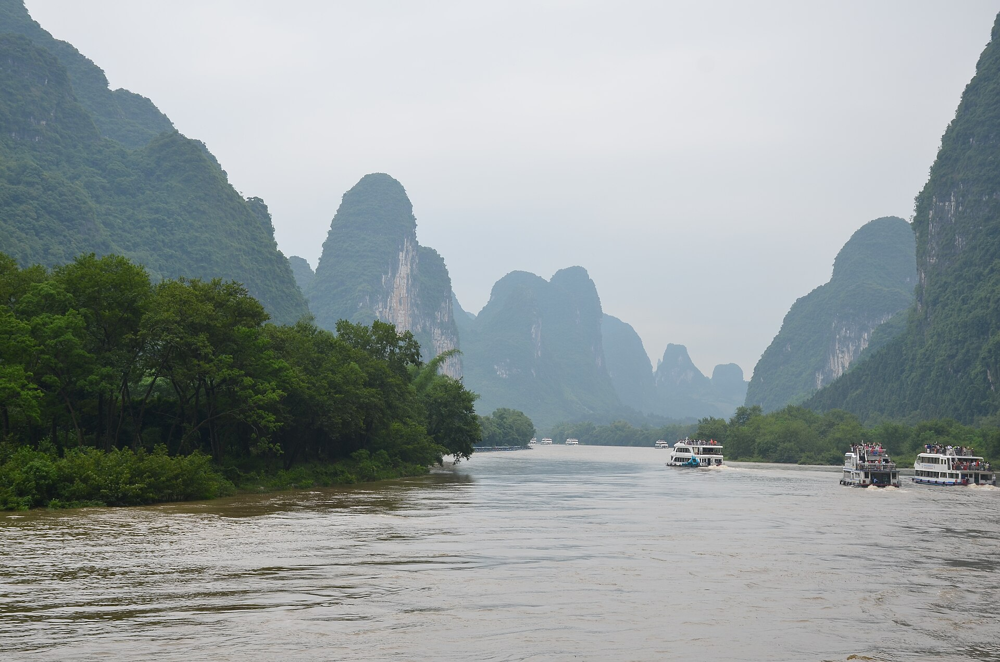

第一次来广州，三天行程怎样安排更从容？
不用把所有地标装进一张行程单。从街区、节奏和抵离时间出发，安排一段真正走得舒服的广州旅行。
阅读全文把想去的地方读得更深，把出发前的问题想得更细。
这里有广东旅行的灵感，也有研学与企业活动的实用指南。
6 篇旅行指南
不用把所有地标装进一张行程单。从街区、节奏和抵离时间出发，安排一段真正走得舒服的广州旅行。
阅读全文
一份清楚的需求说明，往往比反复询问“多少钱”更有效。这份清单帮助组团方和企业减少沟通往返。
阅读全文
从一个好问题开始，把观察、记录与表达放进行程。学习的成果，不一定是一张填满答案的任务单。
阅读全文
从目标、预算到现场执行，年会筹备最需要的是一份能共同确认的工作底稿，而不是不断增加的创意。
阅读全文
短途团建的价值在于合理分配相聚时间。减少折返，让讨论、交流和目的地体验自然连接。
阅读全文
酒店、交通、体验都很重要，但每个家庭的优先级不同。先确定最在意的事情，再安排一份适合自己的行程。
阅读全文试试“广州”“研学”或“年会”。
本栏目为官网设计配套的原创内容样稿。正式发布前需完成目的地信息核查及企业审核。
一次家庭出游，一堂行走的课堂，或一场值得记住的相聚。